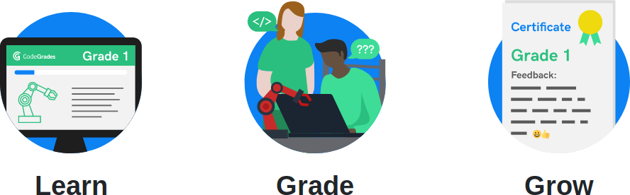
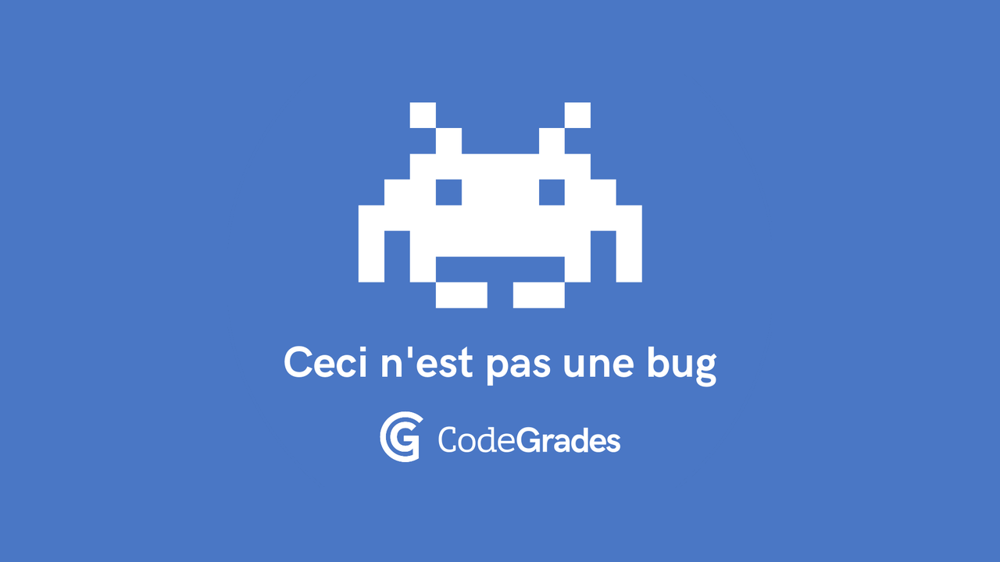

Hello CodeGrades!
This is a blog about CodeGrades, an experiment to help folks learn about programming (initially in Python). We'll use it to celebrate the successes, learn from the failures and reflect upon the feedback of participants. We'll also share project news here too.
So, what are CodeGrades?

At a time when technology is finding its way into every aspect of our lives many folks want to be more than just passive consumers of technology. They feel a desire to become creators of technology. They want to take control of their digital world. They want the skills to make their technology reflect their own needs.
This is where CodeGrades come in...
CodeGrades are a programming version of time-proven techniques like music grades or belts in martial arts. Learners level up by applying the knowledge and skills needed for each grade to their own fun, interesting and challenging coding projects. Learners present their projects to professional software developers who assess the projects against the criteria for the grade being taken and provide a set of marks and written feedback so the learner can see where they're doing well, what needs to improve and what their next steps may be.
CodeGrades are eight cumulative steps for learning how to write code. The first grade is easy enough for most people to take as a first step into programming. The eighth grade is of equivalent standard to the skills and knowledge needed to be an effective junior professional software developer. The middle grades bridge the way so the skill gaps between each of the grades is achievable. They're like stepping stones into coding, or perhaps a modern day Gradus ad Parnassum.

The syllabus for CodeGrades is written by professional software developers. The grades reflect current best practice found in the software industry. They offer a framework for sustained and structured long term learning to write code. All the resources associated with CodeGrades are free, learners only pay to take the grading. Grades will be competitively priced and will certainly not cost the many thousands needed to attend a code bootcamp.
Passing a grade is undeniable evidence that an expert programmer believes the learner has attained the level of competence, knowledge and skill for the grade taken. Nobody can take that achievement away. It's something to be celebrated and gives learners the confidence and momentum to continue on their path to programming mastery.
The professional developers who assess the candidates in a grading (we call them code mentors because that sounds more friendly than examiners) are paid for their time at a level comensurate to that of a senior software engineer. We like to think this may be an alternative source of income for FLOSS developers who want to concentrate on their software projects rather than work in an office.
That's it in a nutshell.
It's early days but we have already successfully graduated a first cohort of learners through "grade 1 Python" (with better than expected outcomes). We have just started a second cohort of learners to test the new syllabus (more on that soon) and hope to engage with further test cohorts over the summer. Eventually we will open up our website so learners will be able to book and pay for grading. We expect this to happen by the end of 2019 at the latest.
There is still much to do! If you think you could support our work, or perhaps you have feedback or maybe want to get more involved, please don't hesitate to get in touch via the email address at the bottom of this page.
Onwards and upwards.